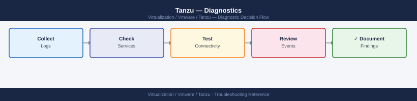

Tanzu — Diagnostics¶

Before you begin¶
- Access: kubeconfig for the management cluster and affected workload cluster; SSH access to the Supervisor control plane VMs (SSH key from vCenter → Workload Management → Supervisor); Harbor admin credentials
- Gather first: the specific symptom (pod stuck, image pull error, PVC not bound, cluster create failed), the namespace and pod or cluster name, and the time the issue started
- Scope: confirm whether the issue affects one pod, one namespace, one workload cluster, or the Supervisor itself
Step 1 — Check cluster events and pod state¶
# Set the kubeconfig to the affected workload cluster
tanzu cluster kubeconfig get <cluster-name> --admin
kubectl config use-context <cluster-context>
# All events across all namespaces, sorted by most recent last
kubectl get events -A --sort-by='.lastTimestamp' | tail -50
# Look for: Warning events; FailedScheduling, BackOff, FailedMount, OOMKilled
# Events for a specific namespace
kubectl get events -n production --sort-by='.lastTimestamp'
# All non-Running pods (find the stuck ones)
kubectl get pods -A --field-selector=status.phase!=Running,status.phase!=Succeeded
# Describe a specific failing pod
kubectl describe pod <pod-name> -n <namespace>
# Look for: Events section at the bottom — shows exactly what failed and why
# Container logs (current run)
kubectl logs <pod-name> -n <namespace> --tail=100
# Previous container logs (if pod restarted — crash loop)
kubectl logs <pod-name> -n <namespace> --previous --tail=100
# Multi-container pod: specify container name
kubectl logs <pod-name> -n <namespace> -c <container-name> --tail=100
Expected outputFetching credentials for cluster 'prod-wld-01'...
Credentials written to /home/admin/.kube/config
Switched to context "prod-wld-01-admin@prod-wld-01"
NAMESPACE LAST SEEN TYPE REASON OBJECT MESSAGE
kube-system 2m Normal NodeAllocatableEnforced node/worker-03 Updated Node Allocatable limit across pods
kube-system 5m Warning FailedScheduling pod/coredns-558bd4d5-9kx2l 0/5 nodes available: 5 Insufficient memory
kube-system 7m Warning BackOff pod/etcd-master-01 Back-off restarting failed container
production 8m Warning FailedMount pod/app-deploy-7c4f8b2-lmq9 MountVolume.SetUp failed for volume "config-vol"
production 10m Warning OOMKilled pod/cache-worker-5d9e3-abc12 Container was OOMKilled
...
NAMESPACE LAST SEEN TYPE REASON OBJECT MESSAGE
production 2m Normal Pulled pod/nginx-ingress-8f2c1-xyz Successfully pulled image "nginx:1.21"
production 8m Warning FailedMount pod/app-deploy-7c4f8b2-lmq9 MountVolume.SetUp failed for volume "config-vol": secret "db-creds" not found
NAME READY STATUS RESTARTS AGE
kube-system/coredns-558bd4d5-9kx2l 0/1 CrashLoopBackOff 12 45m
production/app-deploy-7c4f8b2-lmq9 0/2 Pending 0 38m
production/cache-worker-5d9e3-abc12 0/1 OOMKilled 3 22m
Name: app-deploy-7c4f8b2-lmq9
Namespace: production
Status: Pending
Events:
Type Reason Age From Message
---- ------ ---- ---- -------
Warning FailedScheduling 8m default-scheduler 0/5 nodes available: 2 Insufficient memory, 3 node(s) had taint toleration
[2024-01-15T14:32:18.921Z] INFO Starting application initialization
[2024-01-15T14:32:19.045Z] ERROR Failed to connect to database: connection timeout
[2024-01-15T14:32:19.156Z] ERROR Retrying connection attempt 1/5
[2024-01-15T14:32:24.203Z] ERROR Retrying connection attempt 2/5
[2024-01-15T14:32:29.312Z] FATAL Max retries exceeded, exiting
[2024-01-15T14:28:42.891Z] INFO Container started successfully
[2024-01-15T14:28:43.012Z] INFO Loaded configuration from /etc/config/app.yaml
[2024-01-15T14:28
¶
Fetching credentials for cluster 'prod-wld-01'...
Credentials written to /home/admin/.kube/config
Switched to context "prod-wld-01-admin@prod-wld-01"
NAMESPACE LAST SEEN TYPE REASON OBJECT MESSAGE
kube-system 2m Normal NodeAllocatableEnforced node/worker-03 Updated Node Allocatable limit across pods
kube-system 5m Warning FailedScheduling pod/coredns-558bd4d5-9kx2l 0/5 nodes available: 5 Insufficient memory
kube-system 7m Warning BackOff pod/etcd-master-01 Back-off restarting failed container
production 8m Warning FailedMount pod/app-deploy-7c4f8b2-lmq9 MountVolume.SetUp failed for volume "config-vol"
production 10m Warning OOMKilled pod/cache-worker-5d9e3-abc12 Container was OOMKilled
...
NAMESPACE LAST SEEN TYPE REASON OBJECT MESSAGE
production 2m Normal Pulled pod/nginx-ingress-8f2c1-xyz Successfully pulled image "nginx:1.21"
production 8m Warning FailedMount pod/app-deploy-7c4f8b2-lmq9 MountVolume.SetUp failed for volume "config-vol": secret "db-creds" not found
NAME READY STATUS RESTARTS AGE
kube-system/coredns-558bd4d5-9kx2l 0/1 CrashLoopBackOff 12 45m
production/app-deploy-7c4f8b2-lmq9 0/2 Pending 0 38m
production/cache-worker-5d9e3-abc12 0/1 OOMKilled 3 22m
Name: app-deploy-7c4f8b2-lmq9
Namespace: production
Status: Pending
Events:
Type Reason Age From Message
---- ------ ---- ---- -------
Warning FailedScheduling 8m default-scheduler 0/5 nodes available: 2 Insufficient memory, 3 node(s) had taint toleration
[2024-01-15T14:32:18.921Z] INFO Starting application initialization
[2024-01-15T14:32:19.045Z] ERROR Failed to connect to database: connection timeout
[2024-01-15T14:32:19.156Z] ERROR Retrying connection attempt 1/5
[2024-01-15T14:32:24.203Z] ERROR Retrying connection attempt 2/5
[2024-01-15T14:32:29.312Z] FATAL Max retries exceeded, exiting
[2024-01-15T14:28:42.891Z] INFO Container started successfully
[2024-01-15T14:28:43.012Z] INFO Loaded configuration from /etc/config/app.yaml
[2024-01-15T14:28
Step 2 — Diagnose Supervisor control plane issues¶
The Supervisor runs as 3 VMs on ESXi. Access requires the SSH key stored in vCenter.
# Get Supervisor control plane VM IPs
# vCenter → Workload Management → Supervisor → Control Plane VMs → note all 3 IPs
# SSH to a Supervisor control plane VM
# SSH key location: vCenter → Workload Management → Supervisor → SSH Key → Download
ssh -i ~/.ssh/supervisor_key root@<supervisor-control-plane-ip>
# Check the API server log
journalctl -u kube-apiserver -n 200 --no-pager | grep -i "error\|fail\|panic"
# Check etcd health
journalctl -u etcd -n 100 --no-pager | grep -i "error\|fail"
# Check system pod state from the Supervisor context
export KUBECONFIG=/root/.kube/config
kubectl get pods -n kube-system | grep -v Running
kubectl get pods -n vmware-system-tkg | grep -v Running
kubectl get pods -n vmware-system-csi | grep -v Running
# Check TKG machine and cluster state
kubectl get clusters -A
kubectl get machines -A
kubectl get tanzukubernetesclusters -A
root@supervisor-cp-01:~# journalctl -u kube-apiserver -n 200 --no-pager | grep -i "error\|fail\|panic"
Nov 15 14:32:18 supervisor-cp-01 kube-apiserver[2847]: E1115 14:32:18.456789 2847 reflector.go:147] Failed to watch *v1.Pod: unknown (get pods failed)
Nov 15 14:35:02 supervisor-cp-01 kube-apiserver[2847]: W1115 14:35:02.123456 2847 server.go:212] Failed to load audit policy from /etc/kubernetes/audit-policy.yaml
root@supervisor-cp-01:~# journalctl -u etcd -n 100 --no-pager | grep -i "error\|fail"
(no output — etcd is healthy)
root@supervisor-cp-01:~# export KUBECONFIG=/root/.kube/config
root@supervisor-cp-01:~# kubectl get pods -n kube-system | grep -v Running
NAME READY STATUS RESTARTS AGE
coredns-558bd4d5db-7x9kl 1/1 CrashLoopBackOff 12 3d2h
metrics-server-5f4b8f6c9d-2m8np 0/1 ImagePullBackOff 0 2d18h
root@supervisor-cp-01:~# kubectl get pods -n vmware-system-tkg | grep -v Running
NAME READY STATUS RESTARTS AGE
tkg-system-controller-7f8c9d2b1-qk4lp 1/2 CrashLoopBackOff 8 1d5h
root@supervisor-cp-01:~# kubectl get pods -n vmware-system-csi | grep -v Running
(no output — all CSI pods running)
root@supervisor-cp-01:~# kubectl get clusters -A
NAMESPACE NAME PHASE AGE
tkg-system tkg-mgmt-cluster Running 45d
workload-ns-01 prod-cluster-01 Provisioning 2h
workload-ns-02 dev-cluster-02 Running 12d
root@supervisor-cp-01:~# kubectl get machines -A
NAMESPACE NAME PHASE AGE
tkg-system tkg-mgmt-cluster-md-0-7x8k9-abc12 Running 45d
workload-ns-01 prod-cluster-01-md-0-5f2m3-xyz78 Provisioning 2h
workload-ns-02 dev-cluster-02-md-1-9p1k7-def45 NotReady 12d
root@supervisor-cp-01:~# kubectl get tanzukubernetesclusters -A
NAMESPACE NAME STATUS AGE
workload-ns-01 prod-cluster-01 Pending 2h
workload-ns-02 dev-cluster-02 Running 12d
Common errors
Permission denied (publickey) — Verify the SSH key file has 600 permissions (`chmod 600
Step 3 — Collect the diagnostics bundle¶
# Collect full diagnostics from the management cluster
tanzu diagnostics collect --management-cluster
# Output: tanzu-diagnostics-<timestamp>.tar.gz in current directory
# Includes: management cluster logs, plugin state, kubeconfig
# Full Kubernetes cluster state dump (works with any kubeconfig)
kubectl cluster-info dump \
--output-directory=/tmp/cluster-dump \
--all-namespaces
tar czf cluster-dump-$(date +%Y%m%d).tar.gz /tmp/cluster-dump/
# Include in bundle: events from the failing cluster
kubectl get events -A --sort-by='.lastTimestamp' -o yaml > /tmp/cluster-events.yaml
# Enable verbose tanzu CLI logging for a failing operation
TANZU_LOG_LEVEL=debug tanzu cluster create my-cluster \
--file cluster.yaml 2>&1 | tee tanzu-debug-$(date +%Y%m%d).log
# High-verbosity kubectl output
tanzu cluster list -v 9
Collecting management cluster diagnostics...
Diagnostics bundle created: tanzu-diagnostics-20240215-143022.tar.gz (287MB)
Cluster info dumped to /tmp/cluster-dump
Compressing cluster dump...
cluster-dump-20240215.tar.gz created (156MB)
NAMESPACE NAME FIRSTSEEN LASTSEEN COUNT MESSAGE
kube-system coredns-558bd4d5c9-2k8vx.17a4e8f1a2b3c4d5 2024-02-15T09:22:11Z 2024-02-15T14:18:33Z 847 Back-off restarting failed container
tanzu-system tanzu-controller-manager.17a4e8f1a2b3c4d6 2024-02-15T10:05:22Z 2024-02-15T14:19:01Z 12 Pod sandbox changed, it will be killed and re-created
capv-system machine-controller.17a4e8f1a2b3c4d7 2024-02-15T11:33:44Z 2024-02-15T14:20:15Z 3 Node not ready
Events exported to /tmp/cluster-events.yaml (2.3MB, 1247 events)
2024-02-15T14:21:03Z DEBUG [tanzu/core] Initializing cluster create operation
2024-02-15T14:21:04Z DEBUG [tanzu/core] Reading cluster config from cluster.yaml
2024-02-15T14:21:05Z DEBUG [tanzu/core] Validating infrastructure provider: vsphere
2024-02-15T14:21:06Z DEBUG [tanzu/core] Connecting to vCenter: vc.example.com
2024-02-15T14:21:08Z DEBUG [tanzu/core] Cluster creation initiated: my-cluster
tanzu-debug-20240215.log created (4.1MB)
NAME NAMESPACE STATUS CONTROLPLANE WORKERS KUBERNETES TANZUVERSION
my-cluster default running 3/3 5/5 v1.27.5 v0.28.1
prod-cluster tanzu-system running 3/3 8/8 v1.28.2 v0.29.0
Common errors
error: unable to connect to management cluster: connection refused — Verify the management cluster kubeconfig is set correctly with kubectl config current-context and the cluster is accessible.
error: diagnostics collection timed out after 5m0s — Increase the timeout with --timeout=10m flag or check if the management cluster is experiencing resource exhaustion with kubectl top nodes.
error: cluster-dump directory already exists — Remove the existing directory with rm -rf /tmp/cluster-dump before running the dump command again.
Step 4 — Diagnose CSI driver and PVC issues¶
PVCs that stay in Pending state indicate a problem with the vSphere CSI driver.
# Check PVC status in the affected namespace
kubectl get pvc -n <namespace>
# Expected: STATUS = Bound
# Problem: STATUS = Pending (volume not provisioned)
# Describe the PVC for the binding error
kubectl describe pvc <pvc-name> -n <namespace>
# Events section shows: ProvisioningFailed, WaitForFirstConsumer, etc.
# Check CSI controller pod
kubectl get pods -n vmware-system-csi
# Expected: all pods Running
# CSI controller logs (provisioning decisions)
CSI_CTRL=$(kubectl get pods -n vmware-system-csi \
-l app=vsphere-csi-controller \
-o jsonpath='{.items[0].metadata.name}')
kubectl logs -n vmware-system-csi $CSI_CTRL \
-c vsphere-csi-controller --tail=100 | grep -i "error\|fail\|provision"
# CSI node DaemonSet logs (mount issues on specific nodes)
kubectl logs -n vmware-system-csi \
-l app=vsphere-csi-node \
-c vsphere-csi-node --tail=50 | grep -i "error\|fail\|mount"
# Check StorageClass exists and is correct
kubectl get storageclass
kubectl describe storageclass <storage-class-name>
Expected outputNAME STATUS VOLUME CAPACITY ACCESS MODES STORAGECLASS AGE
app-data-pvc Pending <none> 10Gi RWO vsphere-csi 2m15s
db-backup-pvc Bound pvc-a7f2c9e1-4b8d-11ed-9c42-005056b3f4a2 50Gi RWO vsphere-csi 5d
Name: app-data-pvc
Namespace: production
Status: Pending
Volume:
Labels: app=myapp
Annotations: volume.beta.kubernetes.io/storage-provisioner: csi.vsphere.vmware.com
Capacity:
Access Modes:
StorageClass: vsphere-csi
Events:
Type Reason Age From Message
---- ------ ---- ---- -------
Warning ProvisioningFailed 45s (x3 over 2m) persistentvolume-controller failed to provision volume with StorageClass "vsphere-csi": rpc error: code = Internal desc = error creating volume: no datastore found
NAME READY STATUS RESTARTS AGE
vsphere-csi-controller-0 1/1 Running 0 8d
vsphere-csi-node-4kxvf 3/3 Running 1 8d
vsphere-csi-node-7m2np 3/3 Running 0 8d
vsphere-csi-node-jq8rl 3/3 Running 2 7d
2024-01-15T10:23:47.123Z ERROR csi-provisioner error creating volume: no datastore found matching storage policy
2024-01-15T10:23:48.456Z WARN csi-provisioner failed to provision volume pvc-a7f2c9e1: insufficient resources
2024-01-15T10:24:12.789Z ERROR csi-provisioner vSphere API error: permission denied for resource pool cluster-1
2024-01-15T10:25:33.012Z ERROR csi-node failed to mount volume at /var/lib/kubelet/pods/abc123/volumes/kubernetes.io~csi/pvc-xyz/mount: connection timeout
2024-01-15T10:25:34.345Z WARN csi-node mount operation exceeded deadline on node esx-host-02.lab.local
NAME PROVISIONER RECLAIMPOLICY VOLUMEBINDINGMODE ALLOWVOLUMEEXPANSION AGE
vsphere-csi (default) csi.vsphere.vmware.com Delete WaitForFirstConsumer true 45d
fast-ssd csi.vsphere.vmware.com Delete Immediate false 30d
Name: vsphere-csi
IsDefaultClass: Yes
Provisioner: csi.vsphere.vmware.com
Parameters: storagepolicyname=vSAN Default Storage Policy
ReclaimPolicy: Delete
VolumeBindingMode: WaitForFirstConsumer
AllowVolumeExpans
¶
NAME STATUS VOLUME CAPACITY ACCESS MODES STORAGECLASS AGE
app-data-pvc Pending <none> 10Gi RWO vsphere-csi 2m15s
db-backup-pvc Bound pvc-a7f2c9e1-4b8d-11ed-9c42-005056b3f4a2 50Gi RWO vsphere-csi 5d
Name: app-data-pvc
Namespace: production
Status: Pending
Volume:
Labels: app=myapp
Annotations: volume.beta.kubernetes.io/storage-provisioner: csi.vsphere.vmware.com
Capacity:
Access Modes:
StorageClass: vsphere-csi
Events:
Type Reason Age From Message
---- ------ ---- ---- -------
Warning ProvisioningFailed 45s (x3 over 2m) persistentvolume-controller failed to provision volume with StorageClass "vsphere-csi": rpc error: code = Internal desc = error creating volume: no datastore found
NAME READY STATUS RESTARTS AGE
vsphere-csi-controller-0 1/1 Running 0 8d
vsphere-csi-node-4kxvf 3/3 Running 1 8d
vsphere-csi-node-7m2np 3/3 Running 0 8d
vsphere-csi-node-jq8rl 3/3 Running 2 7d
2024-01-15T10:23:47.123Z ERROR csi-provisioner error creating volume: no datastore found matching storage policy
2024-01-15T10:23:48.456Z WARN csi-provisioner failed to provision volume pvc-a7f2c9e1: insufficient resources
2024-01-15T10:24:12.789Z ERROR csi-provisioner vSphere API error: permission denied for resource pool cluster-1
2024-01-15T10:25:33.012Z ERROR csi-node failed to mount volume at /var/lib/kubelet/pods/abc123/volumes/kubernetes.io~csi/pvc-xyz/mount: connection timeout
2024-01-15T10:25:34.345Z WARN csi-node mount operation exceeded deadline on node esx-host-02.lab.local
NAME PROVISIONER RECLAIMPOLICY VOLUMEBINDINGMODE ALLOWVOLUMEEXPANSION AGE
vsphere-csi (default) csi.vsphere.vmware.com Delete WaitForFirstConsumer true 45d
fast-ssd csi.vsphere.vmware.com Delete Immediate false 30d
Name: vsphere-csi
IsDefaultClass: Yes
Provisioner: csi.vsphere.vmware.com
Parameters: storagepolicyname=vSAN Default Storage Policy
ReclaimPolicy: Delete
VolumeBindingMode: WaitForFirstConsumer
AllowVolumeExpans
Step 5 — Diagnose Pinniped authentication failures¶
Pinniped federates vSphere SSO to Kubernetes RBAC. Auth failures prevent kubectl from working.
# Check Pinniped supervisor pods (management cluster)
kubectl get pods -n pinniped-supervisor
# Expected: all Running
# Check Pinniped supervisor logs (OIDC broker)
PINNIPED_POD=$(kubectl get pods -n pinniped-supervisor \
-l app=pinniped-supervisor \
-o jsonpath='{.items[0].metadata.name}')
kubectl logs -n pinniped-supervisor $PINNIPED_POD --tail=100 | \
grep -i "error\|fail\|warn"
# Check Pinniped concierge (per workload cluster)
kubectl get pods -n pinniped-concierge
kubectl logs -n pinniped-concierge \
$(kubectl get pods -n pinniped-concierge -o jsonpath='{.items[0].metadata.name}') \
--tail=50 | grep -i "error"
# Test kubeconfig for a specific workload cluster
tanzu cluster kubeconfig get <cluster-name>
kubectl get pods -n default
# If this fails with Unauthorized: check Pinniped logs for identity provider error
# Check Pinniped JWTAuthenticator or WebhookAuthenticator configuration
kubectl get jwtauthenticator -A
kubectl describe jwtauthenticator -n pinniped-concierge
NAME READY STATUS RESTARTS AGE
pinniped-supervisor-0 1/1 Running 0 14d
pinniped-supervisor-1 1/1 Running 0 14d
pinniped-supervisor-2 1/1 Running 0 14d
2024-01-15T09:42:31Z warn: OIDC discovery endpoint responding with 200
2024-01-15T09:43:12Z error: failed to validate issuer certificate: x509: certificate signed by unknown authority
NAME READY STATUS RESTARTS AGE
pinniped-concierge-0 1/1 Running 0 8d
pinniped-concierge-1 1/1 Running 1 8d
2024-01-15T10:15:44Z error: failed to authenticate user: invalid token signature
Fetching kubeconfig for cluster 'prod-workload-01'...
Kubeconfig written to /home/user/.kube/config
NAME READY STATUS RESTARTS AGE
coredns-558bd4d5c-2xk9l 1/1 Running 0 22d
nginx-deployment-66b6c45b98-4jm2k 1/1 Running 0 5d
NAMESPACE NAME AUTHENTICATOR TYPE
pinniped-concierge workload-jwt-auth jwtauthenticator
pinniped-concierge webhook-auth-prod webhookauthenticator
Name: workload-jwt-auth
Namespace: pinniped-concierge
Issuer: https://dex.example.com
Audience: pinniped-cluster-prod-01
Common errors
error: failed to validate issuer certificate: x509: certificate signed by unknown authority — Add the identity provider's CA certificate to the Pinniped supervisor's trusted CA bundle in the PinnipedConfig or update the issuer URL to use a publicly trusted certificate.
error: failed to authenticate user: invalid token signature — Verify the JWT signing key in the JWTAuthenticator matches the key used by your identity provider, and check that the issuer URL in the authenticator configuration is correct.
error: Unauthorized — Confirm the user's identity provider group membership matches the Tanzu role bindings, and verify Pinniped concierge can reach the identity provider endpoint by checking network policies and firewall rules.
Step 6 — Check Harbor registry logs¶
# If Harbor is deployed as an OVA (VM-based):
ssh admin@harbor.example.local
# Core (API server)
docker-compose -f /opt/docker-compose.yml logs --tail=100 core | \
grep -i "error\|fail\|warn"
# Registry (blob store)
docker-compose -f /opt/docker-compose.yml logs --tail=100 registry | \
grep -i "error"
# Nginx (request logs)
docker-compose -f /opt/docker-compose.yml logs --tail=100 nginx
# If Harbor is deployed on Kubernetes:
kubectl get pods -n harbor
# Core component
HARBOR_CORE=$(kubectl get pods -n harbor -l component=core \
-o jsonpath='{.items[0].metadata.name}')
kubectl logs -n harbor $HARBOR_CORE --tail=100 | grep -i "error\|warn"
# Registry component
HARBOR_REG=$(kubectl get pods -n harbor -l component=registry \
-o jsonpath='{.items[0].metadata.name}')
kubectl logs -n harbor $HARBOR_REG --tail=100 | grep -i "error"
# Harbor API health check
curl -sk "https://<harbor-fqdn>/api/v2.0/health" | python3 -m json.tool
# Expected: all components "status": "healthy"
admin@harbor.example.local's password:
2024-01-15T09:42:33.456Z [WARN] [core] Failed to get artifact from remote registry: connection timeout after 30s
2024-01-15T09:42:45.123Z [ERROR] [core] Database connection pool exhausted, rejecting new connections
2024-01-15T09:43:12.789Z [WARN] [core] Replication job 'sync-prod' skipped: target registry unreachable
NAME READY STATUS RESTARTS AGE
harbor-core-7d8f9c2b4-kxmn9 1/1 Running 0 2d
harbor-registry-5c3a8f1d9-pq7r2 1/1 Running 1 2d
harbor-jobservice-9b2e4c6f-lmqst 1/1 Running 0 2d
harbor-database-0 1/1 Running 0 2d
harbor-redis-0 1/1 Running 0 2d
2024-01-15T10:15:22.567Z [WARN] [registry] Failed to verify blob sha256:a1b2c3d4e5f6g7h8i9j0k1l2m3n4o5p6: checksum mismatch
2024-01-15T10:15:33.891Z [ERROR] [registry] Storage backend unavailable: connection refused on 10.20.30.40:5432
{
"status": "unhealthy",
"components": [
{
"name": "core",
"status": "healthy"
},
{
"name": "registry",
"status": "healthy"
},
{
"name": "database",
"status": "unhealthy"
}
]
}
Common errors
curl: (60) SSL certificate problem: self signed certificate — Add the -k flag to skip certificate verification, or import the Harbor CA certificate into your system trust store.
error: the server doesn't have a resource type "pods" — Ensure you are connected to the correct Kubernetes cluster with kubectl cluster-info and that the harbor namespace exists with kubectl get ns | grep harbor.
jq: command not found — Replace python3 -m json.tool with jq '.' if jq is installed, or install python3-minimal if using the python formatter.
Step 7 — Enable verbose CLI logging for escalation¶
# Maximum verbose output for tanzu CLI operations
TANZU_LOG_LEVEL=debug tanzu cluster create my-cluster \
--file cluster.yaml 2>&1 | tee tanzu-debug-$(date +%Y%m%d-%H%M).log
# Verbose kubectl output
kubectl get nodes -v 9 2>&1 | tee kubectl-debug.log
# Full namespace dump for a stuck workload cluster
kubectl get all -n <namespace> -o yaml > /tmp/namespace-dump.yaml
# Collect all cluster-scoped resources
kubectl get clusterrole,clusterrolebinding,storageclass,pv -o yaml \
> /tmp/cluster-scoped.yaml
# What to include in VMware SR:
# - tanzu diagnostics collect output (tar.gz)
# - kubectl cluster-info dump output (tar.gz)
# - TANZU_LOG_LEVEL=debug output for the failing tanzu command
# - Supervisor control plane SSH log excerpts (kube-apiserver, etcd)
# - Tanzu and vSphere versions: tanzu version; kubectl version
2024-01-15 14:32:18.456 [DEBUG] Initializing Tanzu cluster creation for my-cluster
2024-01-15 14:32:19.123 [DEBUG] Loading cluster configuration from cluster.yaml
2024-01-15 14:32:22.567 [DEBUG] Validating vSphere credentials against vcenter.example.com
2024-01-15 14:32:25.891 [DEBUG] Creating management cluster networking: 10.0.1.0/24
2024-01-15 14:32:45.234 [DEBUG] Provisioning 3 control plane nodes (vm-cp-01, vm-cp-02, vm-cp-03)
2024-01-15 14:33:12.678 [DEBUG] Waiting for etcd cluster initialization...
2024-01-15 14:33:58.901 [DEBUG] Cluster my-cluster created successfully
Cluster created. You can now use it with: tanzu cluster kubeconfig get my-cluster --admin
NAME STATUS ROLES AGE VERSION
tanzu-cp-node-1 Ready control-plane 2m v1.27.5
tanzu-cp-node-2 Ready control-plane 2m v1.27.5
tanzu-worker-node-1 Ready <none> 90s v1.27.5
NAMESPACE NAME READY STATUS RESTARTS AGE
kube-system coredns-5d78c0869f-7x2kq 1/1 Running 0 2m
kube-system etcd-tanzu-cp-node-1 1/1 Running 0 2m
kube-system kube-apiserver-tanzu-cp-node-1 1/1 Running 0 2m
kube-system kube-controller-manager-tanzu-cp-node-1 1/1 Running 0 2m
...
Common errors
error: unable to read cluster.yaml: no such file or directory — Verify the cluster.yaml file exists in the current directory or provide the full path with --file /path/to/cluster.yaml.
error: invalid credentials for vSphere provider — Ensure GOVC_USERNAME, GOVC_PASSWORD, and GOVC_URL environment variables are set correctly for your vCenter instance.
error: insufficient resources in resource pool — Check vSphere resource pool has adequate CPU, memory, and storage available using the vSphere client or govc pool.info command.
Log locations¶
| Component | Path / Command | What to look for |
|---|---|---|
| Cluster events | kubectl get events -A --sort-by=.lastTimestamp |
Pod scheduling, image pull, volume failures |
| Supervisor API server | journalctl -u kube-apiserver (on Supervisor VM) |
Control plane API errors |
| Supervisor etcd | journalctl -u etcd (on Supervisor VM) |
etcd leader election, disk errors |
| CSI controller | kubectl logs -n vmware-system-csi csi-controller |
PV provisioning failures |
| Pinniped supervisor | kubectl logs -n pinniped-supervisor |
OIDC identity provider errors |
| Harbor core | docker-compose logs core or kubectl logs -n harbor |
Image push/pull API errors |
See also¶
Verify resolution¶
kubectl get pods -A --field-selector=status.phase!=Running,status.phase!=Succeededreturns no podskubectl get pvc -n <namespace>shows all PVCs with STATUS = Boundkubectl get events -A --sort-by=.lastTimestamp | tail -10shows no new Warning eventscurl -sk https://<harbor-fqdn>/api/v2.0/healthreturns all components healthy- Image pull from Harbor succeeds and the affected pod reaches Running state